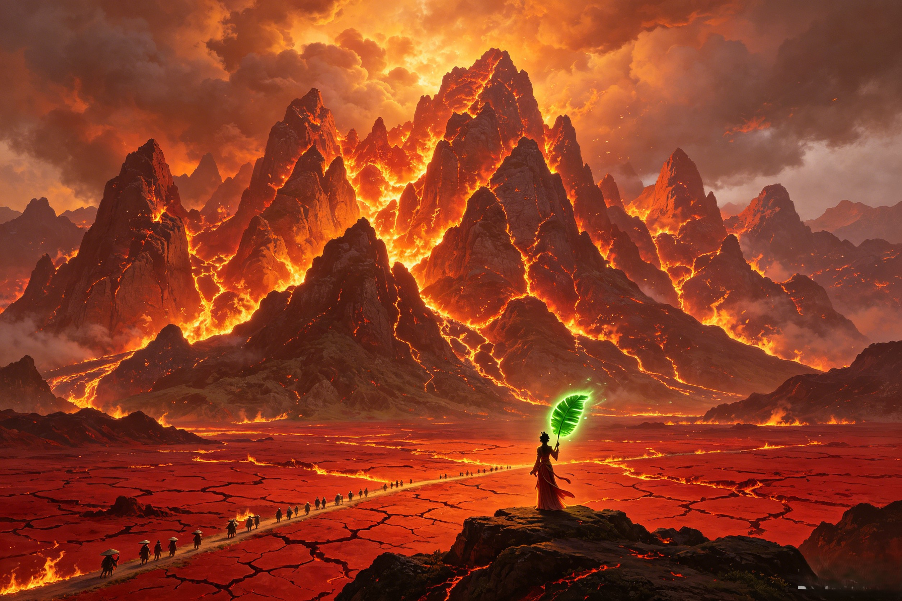

The Kingdom of Eternal Fire
For 500 years, a mountain wreathed in perpetual fire blocked the pilgrim's path to India. Born from the ashes of heaven's own furnace, Flaming Mountain (火焰山) was both the ultimate obstacle and the domain that forged an iron queen.
Flaming Mountain was not always a mountain of fire. Before the great rebellion of Sun Wukong, it was an ordinary peak in the mountain range of what is now China's Xinjiang region. The fire came from heaven — literally. When Sun Wukong burst out of Taishang Laojun's Eight Trigrams Furnace after 49 days of refinement, in his rage he kicked over the furnace. Several fire-bricks from the furnace fell through the clouds and struck the mountain peak below. The bricks, still burning with the primordial fire that Laozi used to refine the elixir of immortality, ignited the mountain. The fire could not be extinguished by water. It could not be smothered by earth. It was celestial fire — the same fire that had given Sun Wukong his golden, smoke-piercing eyes. The mountain burned continuously for 500 years. The surrounding land for a hundred li in every direction became scorched wasteland. No crops grew. No rain fell — the heat vaporized moisture before it could condense. The local people, who had once farmed the fertile valley, were forced to make a horrific annual pilgrimage: they had to travel to Plantain Cave and beg Princess Iron Fan to wave her fan and bring temporary relief. She always agreed — but the price was steep. This was the foundation of her power: she was not the cause of the suffering, but she was the only one who could alleviate it. Taishang Laojun's furnace had unintended collateral damage — a cosmic accident that reshaped an entire region for half a millennium. Sun Wukong kicked over that furnace and bears indirect responsibility for 500 years of suffering. And the Bull Demon King later made this burning wasteland his domain alongside his wife, ruling over a kingdom of ash and ember.
The mountain range stretches approximately 100 kilometers across what is now the Turpan Depression in Xinjiang — one of the hottest places on Earth, where real-world summer temperatures reach 50°C (122°F). The novel's description mirrors real geography with supernatural amplification. The mountain's peaks glow red-orange day and night. The rock itself has been transformed by centuries of celestial fire into a glassy, obsidian-like substance veined with molten channels. Fire-spouts (火焰口) — natural vents where concentrated celestial fire erupts in columns — dot the mountainside. The air shimmers with perpetual heat-haze. At the mountain's base, the ground is cracked red clay, hard as pottery, too hot to walk on barefoot. No vegetation survives within 50 li of the peak. No birds fly overhead — the thermal updrafts are too violent. Travelers attempting to cross must pass through a narrow pass directly adjacent to the mountain — there is no other route to India. The pilgrims of Journey to the West must cross this pass. They cannot go around. The mountain is, in narrative terms, the gatekeeper — the barrier that tests whether the pilgrims have the resources (political, magical, and moral) to overcome an obstacle that brute force alone cannot solve. Tang Sanzang must cross this hell as a mortal monk with no magical protection, relying entirely on his disciples. Sha Wujing endures the heat alongside his master, his sand-demon constitution giving him some resilience but not immunity. Zhu Bajie's thick hide and demon constitution give him slightly more tolerance — but not much, and he complains constantly about the scorching conditions.
Despite the hellish conditions, people do live in the region — because they have nowhere else to go. Communities cluster at the mountain's margins: villages built into the lee of lesser hills, their architecture adapted to the heat with thick walls, narrow windows, and underground storage chambers that stay cool even in the worst of the blaze. The people are primarily farmers who cultivate heat-resistant crops — drought-hardy millet, desert melons — in the narrow band of land where the mountain's heat is bearable but ever-present. Their lives revolve around one annual ritual: the Fan Pilgrimage. Each year, before planting season, village elders travel to Plantain Cave carrying offerings — food, silk, worked iron — to petition Princess Iron Fan for a cooling wind. She receives them in her throne room. She accepts their offerings. She waves the Banana Leaf Fan — gently, the cooling breeze setting — and for a brief window, rain can fall and seeds can be planted. This ritual is not worship. She is not a goddess. She is a neighbor with a very particular skill set who charges for her services. But she is fair: she never refuses a legitimate petition. She never demands more than the villages can afford. In her own way, she takes her responsibility seriously. The villages depend on her. And she, in turn, derives her legitimacy not from conquest but from this web of reciprocal obligation — the iron queen who keeps her side of the bargain. Guanyin offers mercy freely — a stark contrast to Princess Iron Fan's transactional but reliable relationship with her people. The Jade Emperor's celestial bureaucracy offers no help to these people — they are beneath heaven's notice, forgotten behind a wall of flame. And the Bull Demon King, during his time at Flaming Mountain, was the feared enforcer but not the administrator — the running of the domain always fell to his wife.
After Sun Wukong extinguishes Flaming Mountain with 49 waves of the Banana Leaf Fan, the region is transformed. The celestial fire goes out permanently. The mountain cools. Within a year, the first grasses appear on its slopes. Within a decade, trees. The 100-li wasteland shrinks. Rain begins to fall naturally — the thermal dome that had repelled weather for five centuries collapses. The people no longer need to beg for a cooling wind. What happens to Princess Iron Fan in this new world? The novel does not say. But folk traditions in Xinjiang fill the gap: she becomes a rain-bringer. Instead of wielding the fan to extinguish fire, she wields it to summon gentle rains for the newly fertile valley. Her relationship with the villages shifts from transactional to communal. She is still the iron queen. She still does not bow to heaven or to any pilgrim. But her domain is no longer defined by suffering — it is defined by growth. In some versions of the local legend, she plants the first tree on the cooled mountain herself — a descendant of the primordial leaf that became her fan. The iron of her name, it turns out, was never the cold iron of armor. It was the iron in rich soil — the mineral that makes things grow. Nuwa, who once repaired the broken sky, shares with Princess Iron Fan the archetype of a female power that mends a broken world rather than dominating it. Taishang Laojun's furnace caused the problem, but his philosophy of natural balance is ultimately served by the mountain's healing — the Taoist principle of restoration after catastrophe. And like Pangu, whose body became the world, the mountain now becomes part of the living landscape rather than a scar upon it — a wound that has finally healed.
Because fire-bricks from Taishang Laojun's Eight Trigrams Furnace fell to earth when Sun Wukong kicked over the furnace during his great rebellion. These bricks, burning with primordial celestial fire, ignited the mountain and could not be extinguished by any normal means. The mountain burned continuously for 500 years.
The fictional Flaming Mountain is based on the real Flaming Mountains (火焰山) in the Turpan Depression, Xinjiang, China — one of the hottest places on Earth. The real mountains are not on fire but are named for their red sandstone that glows like flame in the summer heat.
The 500-year ordeal ended. Rain returned. Vegetation grew. The people no longer needed to make the annual pilgrimage to beg Princess Iron Fan for cooling winds. In local folk tradition, Princess Iron Fan transitioned from a guardian of the fire to a bringer of rain, maintaining her relationship with the communities she had once held in a transactional bond.
Dive Deeper